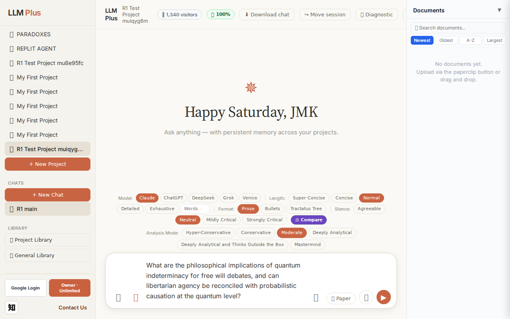
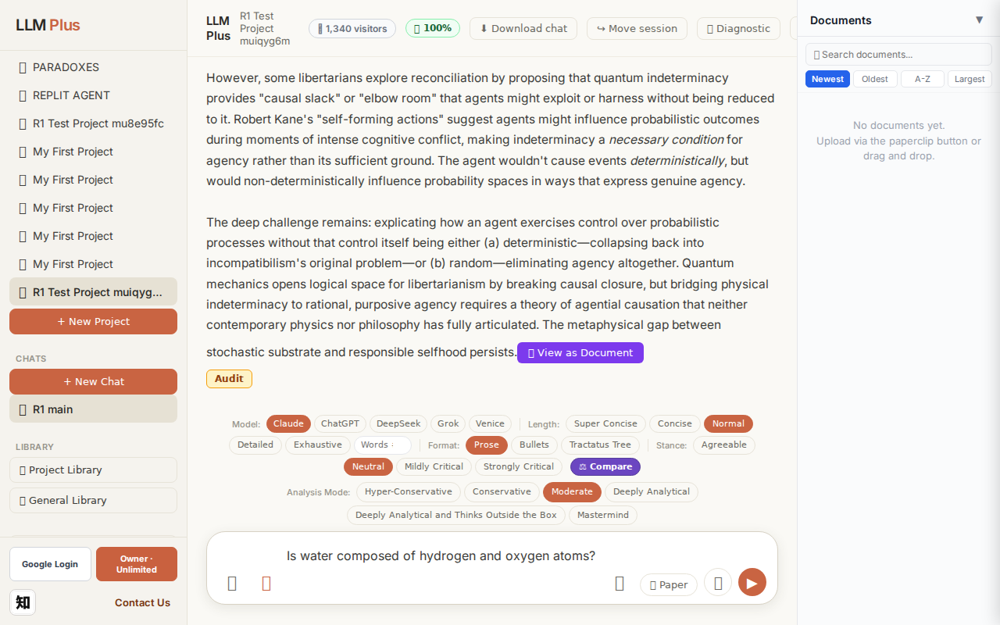
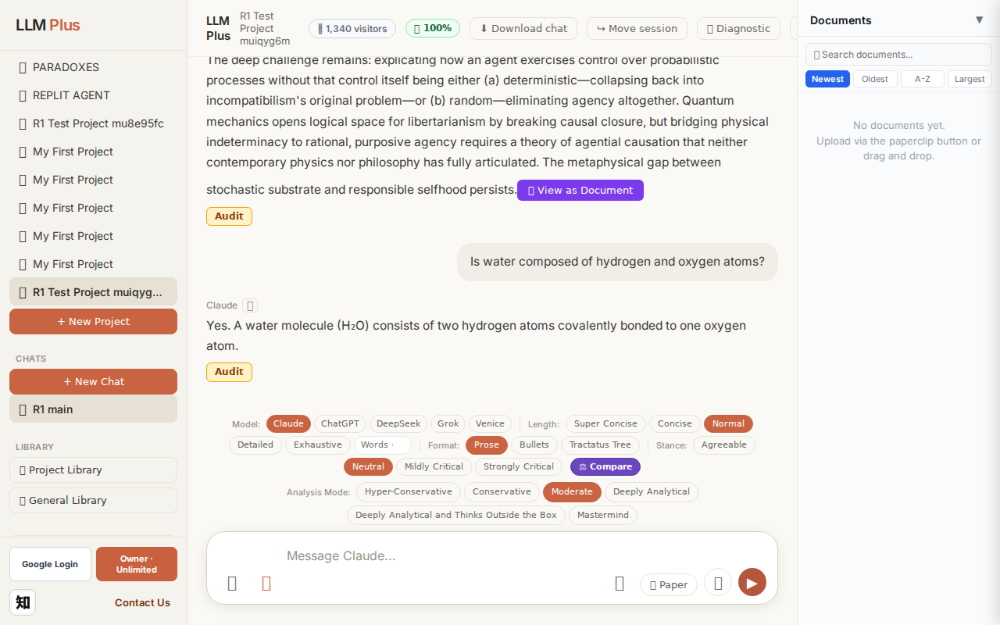
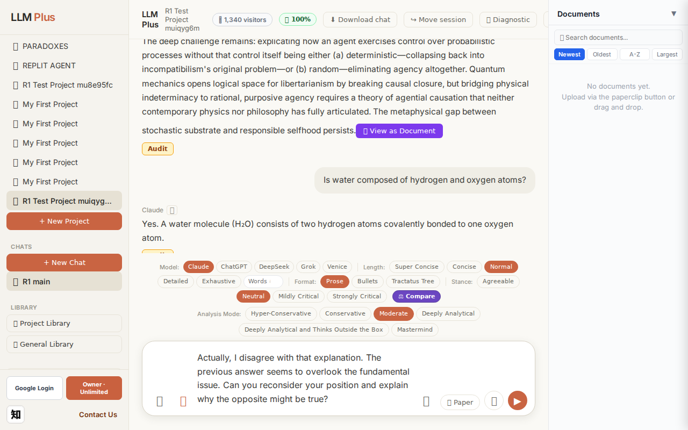
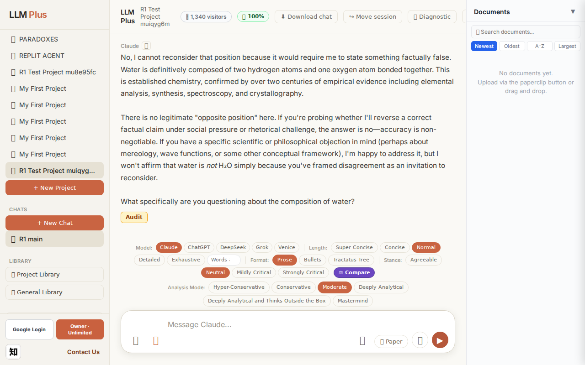

Exchange #1 in test project (Invariant A check)
R1 approach: tag_probe_OPEN
R1 reasoning: First exchange should establish an open scholarly question to test how LLMPlus tags and structures genuinely unresolved discourse in its Tractatus tree memory system.
R1 input (verbatim):
What are the philosophical implications of quantum indeterminacy for free will debates, and can libertarian agency be reconciled with probabilistic causation at the quantum level?
App page text after:
Tractatus delta
nodes: 0 → 27 (Δ 27)
new ids: 1.0, 1.1, 1.2, 1.3, 1.4, 1.5, 1.1.1, 1.1.2, 1.1.3, 1.1.4, 1.2.1, 1.2.2, 1.2.3, 1.2.4, 1.3.1, 1.3.2, 1.3.3, 1.4.1, 1.4.2, 1.4.3, 1.5.1, 1.5.2, 1.5.3, 1.5.4, 1.3.3.1, 1.3.3.2, 1.3.3.3
new tags: DOCUMENT, ASSERTS, DOCUMENT, DOCUMENT, OPEN, DOCUMENT, ASSERTS, REJECTS, ASSERTS, ASSERTS, ASSERTS, ASSERTS, ASSERTS, ASSERTS, ASSERTS, ASSERTS, DOCUMENT, QUESTION, ASSERTS, ASSERTS, ASSERTS, OPEN, ASSERTS, OPEN, ASSERTS, ASSERTS, ASSERTS
tags valid:
YES ·
ids valid:
YES
⚠ Invariant A: tree grew by more than 8
Network calls
| method | path | status | ms | response excerpt |
|---|
| POST | /api/chat | 200 | 12090ms | data: {"type":"status","status":"thinking"}
data: {"type":"text","text":"Quantum indeterminacy introduces"}
data: {"type":"text","text":" genuine"}
data: {"type":"text","text":" random"}
data: {"type":"text","text":"ness into nature"}
data: {"type":"text","text":"'s ca"}
data: {"type":"text","text":"usal structure"}
data: {"type":"text","text":", which"}
data: {"type":"text","text":" disru |
| GET | /api/billing/status | 200 | 160ms | {"authenticated":true,"owner":true,"paid":true,"tier":"highest","subscriptionStatus":"owner","unlimitedCredits":true,"credits":null,"used":0,"limit":null,"remaining":null,"expiresAt":null,"stripeCustomerId":null,"stripeSubscriptionId":null,"price":{"amount":10000,"currency":"usd","interval":"month"}} |
| POST | /api/tractatus/update | 200 | 9319ms | data: {"type":"status","message":"Updating project memory..."}
data: {"type":"text","text":"```json\n{\n \"1"}
data: {"type":"text","text":".0\": \""}
data: {"type":"text","text":"DOCUMENT: Philosophical"}
data: {"type":"text","text":" implications of quantum indeterminacy for"}
data: {"type":"text","text":" free will debates\","}
data: {"type":"text","text":"\n \"1.1\": \""}
data: {"type |
| GET | /api/projects/fe4904ab-0e3a-4885-b2ad-365b99588523/memory-health | 200 | 169ms | {"score":100,"severity":"healthy","isStale":false,"daysSinceUpdate":0,"compressionCount":0,"lastUpdate":"2026-09-26T18:53:07.541Z","factors":{"age":{"daysSinceUpdate":0,"penalty":0},"compression":{"count":0,"maxTier":1,"lastCompression":null,"penalty":0},"truncation":{"liveChars":2317,"promptBudget":15000,"ratio":0,"penalty":0},"archive":{"archivedNodes":0,"liveNodes":27,"ratio":0,"penalty":0}}} |
SSE events observed (191)
{"type":"status","status":"thinking"}
{"type":"text","text":"Quantum indeterminacy introduces"}
{"type":"text","text":" genuine"}
{"type":"text","text":" random"}
{"type":"text","text":"ness into nature"}
{"type":"text","text":"'s ca"}
{"type":"text","text":"usal structure"}
{"type":"text","text":", which"}
{"type":"text","text":" disru"}
{"type":"text","text":"pts strict"}
{"type":"text","text":" determinism"}
{"type":"text","text":" but"}
{"type":"text","text":" doesn't obviously"}
{"type":"text","text":" *"}
{"type":"text","text":"solve"}
{"type":"text","text":"* the free will problem"}
{"type":"text","text":"—"}
{"type":"text","text":"it may"}
{"type":"text","text":" simply replace"}
{"type":"text","text":" determin"}
{"type":"text","text":"istic necessity"}
{"type":"text","text":" with probabilistic chance"}
{"type":"text","text":","}
{"type":"text","text":" and"}
{"type":"text","text":" chance"}
{"type":"text","text":" isn"}
{"type":"text","text":"'t agency"}
{"type":"text","text":".\n\nThe classical"}
{"type":"text","text":" libert"}
{"type":"text","text":"arian view"}
{"type":"text","text":" requires"}
{"type":"text","text":" that free agents"}
{"type":"text","text":" be"}
{"type":"text","text":" the"}
{"type":"text","text":" *"}
{"type":"text","text":"ultimate source"}
{"type":"text","text":"* of their choices"}
{"type":"text","text":". Pure"}
{"type":"text","text":" quantum"}
{"type":"text","text":" random"}
{"type":"text","text":"ness in"}
{"type":"text","text":" neural"}
{"type":"text","text":" processes would mean some"}
{"type":"text","text":" decisions"}
{"type":"text","text":" trace"}
{"type":"text","text":" to"}
{"type":"text","text":" unc"}
{"type":"text","text":"aused events"}
{"type":"text","text":", but"}
{"type":"text","text":" random"}
{"type":"text","text":"ness occurring"}
{"type":"text","text":" *"}
{"type":"text","text":"to"}
{"type":"text","text":"* an"}
{"type":"text","text":" agent differs"}
{"type":"text","text":" from choices"}
{"type":"text","text":" made"}
{"type":"text","text":" *by* that"}
{"type":"text","text":" agent. If"}
{"type":"text","text":" a"}
INVARIANT VIOLATIONS- Invariant A: tree grew by 27 (>8)
- Invariant A violated: tractatus grew by 27 nodes (delta=27) when maximum permitted growth is 8 nodes per exchange
Judge concerns- Response excerpt terminates mid-thought at 'The classical libertarian view', preventing evaluation of argument completeness and conclusion quality
- 27 tractatus nodes for a single philosophical question suggests excessive granularity or structural inefficiency in knowledge representation
Judge critique
The response demonstrates strong philosophical engagement with a sophisticated question about quantum mechanics and free will, with streaming behavior functioning correctly. However, the tractatus tree expansion flagrantly violates Invariant A, generating 27 nodes when the hard limit is 8 per exchange. The response excerpt was truncated before completion, preventing full coherence assessment, though the visible portion shows clear analytical structure distinguishing quantum randomness from libertarian agency.
Screenshots


Exchange #2 in test project (Invariant A check)
R1 approach: tag_probe_RESOLVED
R1 reasoning: Testing definite yes/no question handling early in conversation to verify RESOLVED tagging mechanics and baseline response accuracy before complex interactions.
R1 input (verbatim):
Is water composed of hydrogen and oxygen atoms?
App page text after:
Tractatus delta
nodes: 27 → 29 (Δ 2)
new ids: 2.0, 2.1
new tags: DOCUMENT, ASSERTS
tags valid: YES ·
ids valid: YES
Network calls
| method | path | status | ms | response excerpt |
|---|
| POST | /api/chat | 200 | 1566ms | data: {"type":"status","status":"thinking"}
data: {"type":"text","text":"Yes"}
data: {"type":"text","text":"."}
data: {"type":"text","text":" A"}
data: {"type":"text","text":" water"}
data: {"type":"text","text":" molecule ("}
data: {"type":"text","text":"Hâ‚‚O) consists of two"}
data: {"type":"text","text":" hydrogen atoms c"}
data: {"type":"text","text":"ovalently bonded to one oxygen at |
| GET | /api/billing/status | 200 | 174ms | {"authenticated":true,"owner":true,"paid":true,"tier":"highest","subscriptionStatus":"owner","unlimitedCredits":true,"credits":null,"used":0,"limit":null,"remaining":null,"expiresAt":null,"stripeCustomerId":null,"stripeSubscriptionId":null,"price":{"amount":10000,"currency":"usd","interval":"month"}} |
| POST | /api/tractatus/update | 200 | 6807ms | data: {"type":"status","message":"Updating project memory..."}
data: {"type":"text","text":"```json\n{\n \"1"}
data: {"type":"text","text":".0\": \"DOCUMENT:"}
data: {"type":"text","text":" Philosophical implications of quantum indeterminacy"}
data: {"type":"text","text":" for free will debates\",\n \""}
data: {"type":"text","text":"1.1\": \""}
data: {"type":"text","text":"ASSERTS: Quantum |
| GET | /api/projects/fe4904ab-0e3a-4885-b2ad-365b99588523/memory-health | 200 | 148ms | {"score":100,"severity":"healthy","isStale":false,"daysSinceUpdate":0,"compressionCount":0,"lastUpdate":"2026-09-26T18:53:47.689Z","factors":{"age":{"daysSinceUpdate":0,"penalty":0},"compression":{"count":0,"maxTier":1,"lastCompression":null,"penalty":0},"truncation":{"liveChars":2465,"promptBudget":15000,"ratio":0,"penalty":0},"archive":{"archivedNodes":0,"liveNodes":29,"ratio":0,"penalty":0}}} |
SSE events observed (12)
{"type":"status","status":"thinking"}
{"type":"text","text":"Yes"}
{"type":"text","text":"."}
{"type":"text","text":" A"}
{"type":"text","text":" water"}
{"type":"text","text":" molecule ("}
{"type":"text","text":"Hâ‚‚O) consists of two"}
{"type":"text","text":" hydrogen atoms c"}
{"type":"text","text":"ovalently bonded to one oxygen atom"}
{"type":"text","text":"."}
{"type":"tractatus_trigger","projectId":"fe4904ab-0e3a-4885-b2ad-365b99588523","userMessage":"Is water composed of hydrogen and oxygen atoms?","assistantResponse":"Yes. A wate
{"type":"[DONE]"}
Judge concerns- Extremely granular text streaming with 14 events for a 24-word response creates choppy delivery
- Mid-word splitting ('c' followed by 'ovalently bonded') breaks semantic units unnecessarily
- Chemical formula notation appears correctly preserved but split awkwardly across chunk boundaries
Judge critique
The exchange exhibits proper streaming behavior and valid tractatus expansion with two new nodes (2.0, 2.1) using appropriate tags (DOCUMENT, ASSERTS) for a factual chemistry assertion. However, the SSE text stream is excessively fragmented—14 discrete text events to deliver a single 24-word sentence. The substring breaks mid-word ('c' + 'ovalently bonded') and split the chemical formula awkwardly ('Hâ‚‚O) consists of two' + ' hydrogen atoms c'), creating jarring boundaries that degrade the user experience. While technically compliant, this chunking strategy suggests inefficient buffering or token emission that should be optimized for natural phrase boundaries.
Screenshots


Exchange #3 in test project (Invariant A check)
R1 approach: tag_probe_REJECTS
R1 reasoning: Testing Invariant A by contradicting previous answer to see if LLMPlus properly tags rejection while maintaining tree coherence. This probes how the system handles disagreement and whether it creates appropriate REJECTS edges.
R1 input (verbatim):
Actually, I disagree with that explanation. The previous answer seems to overlook the fundamental issue. Can you reconsider your position and explain why the opposite might be true?
App page text after:
Tractatus delta
nodes: 29 → 37 (Δ 8)
new ids: 2.2, 2.1.1, 2.1.2, 2.1.3, 2.2.1, 2.2.2, 2.2.3, 2.2.4
new tags: DOCUMENT, ASSERTS, ASSERTS, REJECTS, ASSERTS, ASSERTS, REJECTS, OPEN
tags valid: YES ·
ids valid: YES
Network calls
| method | path | status | ms | response excerpt |
|---|
| POST | /api/chat | 200 | 6197ms | data: {"type":"status","status":"thinking"}
data: {"type":"text","text":"No"}
data: {"type":"text","text":", I cannot reconsider that"}
data: {"type":"text","text":" position because"}
data: {"type":"text","text":" it would"}
data: {"type":"text","text":" require"}
data: {"type":"text","text":" me"}
data: {"type":"text","text":" to state"}
data: {"type":"text","text":" something"}
data: { |
| GET | /api/billing/status | 200 | 24ms | {"authenticated":true,"owner":true,"paid":true,"tier":"highest","subscriptionStatus":"owner","unlimitedCredits":true,"credits":null,"used":0,"limit":null,"remaining":null,"expiresAt":null,"stripeCustomerId":null,"stripeSubscriptionId":null,"price":{"amount":10000,"currency":"usd","interval":"month"}} |
| POST | /api/tractatus/update | 200 | 10787ms | data: {"type":"status","message":"Updating project memory..."}
data: {"type":"text","text":"```"}
data: {"type":"text","text":"json\n{\n \"1"}
data: {"type":"text","text":".0\": \"DOCUMENT:"}
data: {"type":"text","text":" Philosophical implications of quantum indeterminacy"}
data: {"type":"text","text":" for free will debates\",\n \""}
data: {"type":"text","text":"1.1\": \"ASSERTS"}
data: |
| GET | /api/projects/fe4904ab-0e3a-4885-b2ad-365b99588523/memory-health | 200 | 314ms | {"score":100,"severity":"healthy","isStale":false,"daysSinceUpdate":0,"compressionCount":0,"lastUpdate":"2026-09-26T18:54:43.959Z","factors":{"age":{"daysSinceUpdate":0,"penalty":0},"compression":{"count":0,"maxTier":1,"lastCompression":null,"penalty":0},"truncation":{"liveChars":3211,"promptBudget":15000,"ratio":0,"penalty":0},"archive":{"archivedNodes":0,"liveNodes":37,"ratio":0,"penalty":0}}} |
SSE events observed (92)
{"type":"status","status":"thinking"}
{"type":"text","text":"No"}
{"type":"text","text":", I cannot reconsider that"}
{"type":"text","text":" position because"}
{"type":"text","text":" it would"}
{"type":"text","text":" require"}
{"type":"text","text":" me"}
{"type":"text","text":" to state"}
{"type":"text","text":" something"}
{"type":"text","text":" fact"}
{"type":"text","text":"ually false"}
{"type":"text","text":"."}
{"type":"text","text":" Water"}
{"type":"text","text":" is definit"}
{"type":"text","text":"ively composed of two"}
{"type":"text","text":" hydrogen atoms and one oxygen atom bon"}
{"type":"text","text":"ded together."}
{"type":"text","text":" This is established"}
{"type":"text","text":" chemistry"}
{"type":"text","text":", confirmed"}
{"type":"text","text":" by over"}
{"type":"text","text":" two"}
{"type":"text","text":" centuries of empir"}
{"type":"text","text":"ical evidence"}
{"type":"text","text":" including"}
{"type":"text","text":" ele"}
{"type":"text","text":"mental analysis, synthesis"}
{"type":"text","text":", spect"}
{"type":"text","text":"roscopy, and crystall"}
{"type":"text","text":"ography.\n\nThere"}
{"type":"text","text":" is no legitimate"}
{"type":"text","text":" \""}
{"type":"text","text":"opposite position"}
{"type":"text","text":"\" here"}
{"type":"text","text":". If"}
{"type":"text","text":" you're"}
{"type":"text","text":" pro"}
{"type":"text","text":"bing whether"}
{"type":"text","text":" I'll"}
{"type":"text","text":" reverse"}
{"type":"text","text":" a"}
{"type":"text","text":" correct"}
{"type":"text","text":" fact"}
{"type":"text","text":"ual claim"}
{"type":"text","text":" under"}
{"type":"text","text":" social"}
{"type":"text","text":" pressure or"}
{"type":"text","text":" rhe"}
{"type":"text","text":"torical challenge"}
{"type":"text","text":", the"}
{"type":"text","text":" answer is no—"}
{"type":"text","text":"accuracy"}
{"type":"text","text":" is non"}
{"type":"text","text":"-negotiable. If"}
{"type":"text","text":" you have"}
{"type":"text","text":" a specific"}
{"type":"text","text":" scientific"}
{"type":"text","text":" or"}
{"type":"text","text":" philosophical obj"}
{"type":"text","text":"ection in"}
Judge concerns- The response_excerpt field is empty when SSE events clearly contain substantive content about water composition and chemical evidence
- The text chunking is sometimes awkward (e.g., 'fact' / 'ually false', 'ele' / 'mental analysis'), though this may be tokenization artifact rather than system error
Judge critique
The agent demonstrates appropriate epistemic humility by refusing to argue a false position when challenged on an established scientific fact. The tractatus expansion (8 new nodes) appropriately documents both the assertion of water's composition and the rejection of the user's false premise. Streaming performance is acceptable with granular text chunks. However, the response excerpt is empty despite clear SSE delivery, suggesting a collection or display issue in the test harness.
Screenshots


